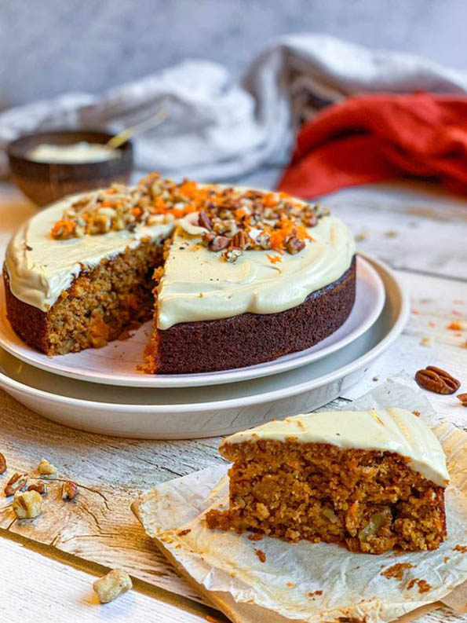
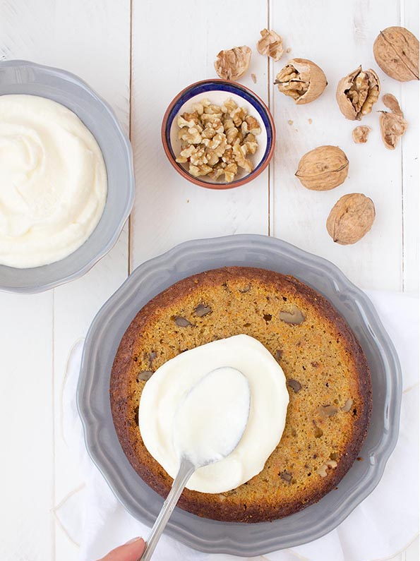

Carrot and walnut cake

- Preparation: 25 minutes
- Cooking: 35-50 minutes
This carrot and walnut cake is delicately scented with cinnamon and spices. Mixed with a perfect texture and flavor!
INGREDIENTS
- 2 cups of oat flakes
- 1 cup of oat flour
- 2 tablespoons of cornstarch
- 2 1/2 teaspoons baking powder
- 2 1/2 teaspoons cinnamon
- 1/2 teaspoon nutmeg
- 1/4 teaspoon salt
- 1 3/4 cup almond milk
- 2 eggs
- 1/3 cup of honey
- 1 tablespoon vanilla extract
- 3/4 cup peeled and grated carrot
- 1/2 cup finely chopped walnuts
- Cream cheese

DIRECTIONS
- We will start by grating the carrots and chopping the walnuts, to have them ready.
Since it takes little time to prepare the dough, we preheat the oven to 180º, with heat up and down. - In a bowl, beat the eggs with the milk, vanilla and honey.
- Add the flour, oat flakes and cornstarch, and continue mixing. We add a pinch of salt and spices to taste (I use cinnamon and nutmeg).
- Finally, we add the grated carrots and chopped walnuts. We try the raw dough to adjust the sweetness if necessary.
- We line an 18-20cm removable mold with baking paper on the bottom, and we grease the walls with light butter. We pour the dough.
- We bake for about 35-50min at 180º, depending on your oven. When we stick a toothpick in the center and it comes out clean, our carrot cake without sugar will be ready.
- We let it cool down first, leaving it inside the oven turned off with the door ajar for about 5-10min, and then on a rack for another 15min.
- We beat the cold cream cheese together with the honey, and spread it on top of the cake with a spatula.
- We decorate with more nuts, and that's it!
NUTRITION INFORMATION
Calories 200 calories | Total Fat 30 grams
Fiber 45 grams | Protein 15 grams
* Nutrition data is approximate and is for informational purposes only.